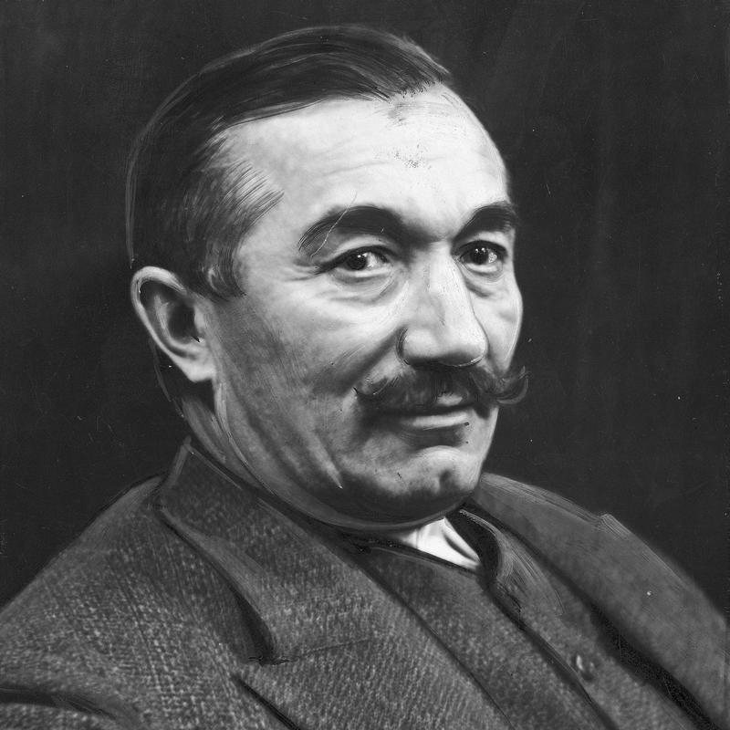

Wincenty Witos |
||
NAWIGACJA |
150. rocznica urodzin Wincentego Witosa (1874-1945)Wybitny mąż stanu, trzykrotny premier II RP, działacz samorządowy i przywódca ruchu ludowego. Senatorowie przypominają działalność Wincentego Witosa i jego polityczne motto działania: „Kiedy nie było Polski niepodległej trzeba do niej dążyć; gdy przyszła - trzeba pracować dla niej; a gdy była w potrzebie - bronić jej”. Urodził się w Wierzchosławicach w biednej rodzinie chłopskiej i dzięki swojemu uporowi i samokształceniu doszedł do najwyższych godności w państwie. Uznawany jest za jednego z ojców niepodległej Polski, a także najważniejszych, najbardziej wyrazistych i wpływowych polityków II RP. |

Wincenty Witos |
|
||